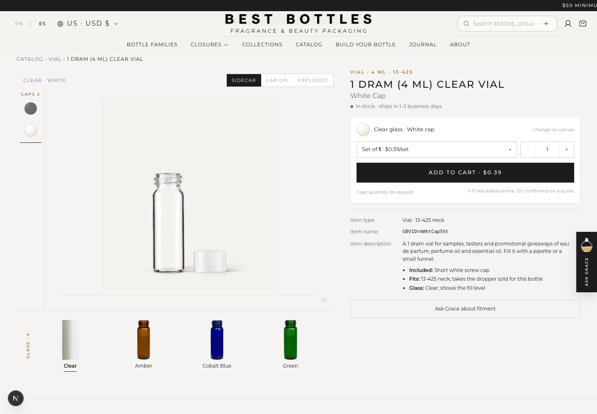
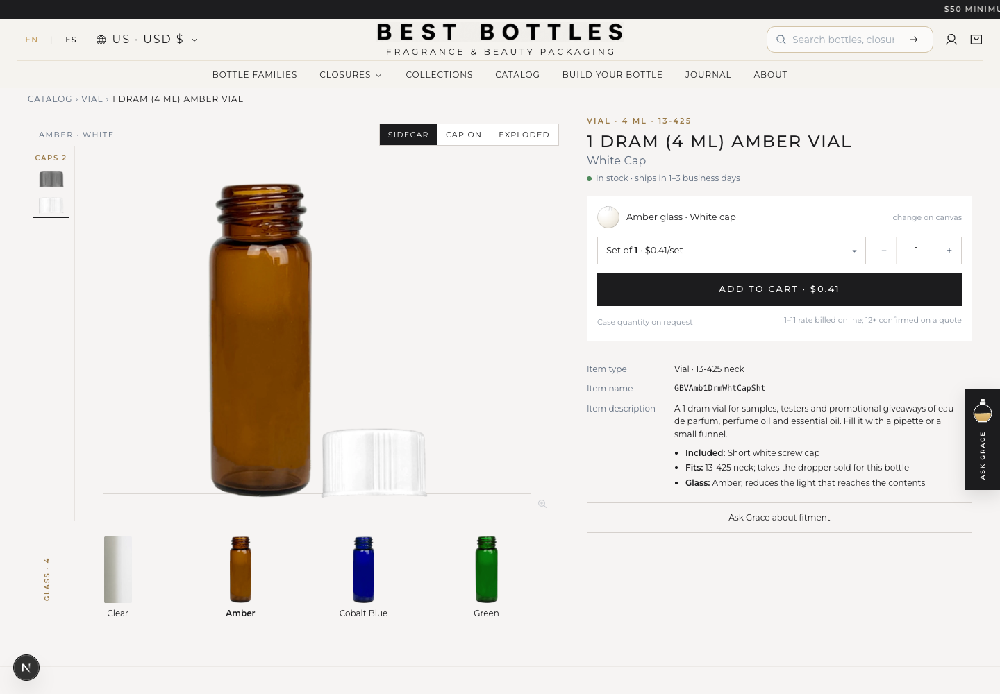
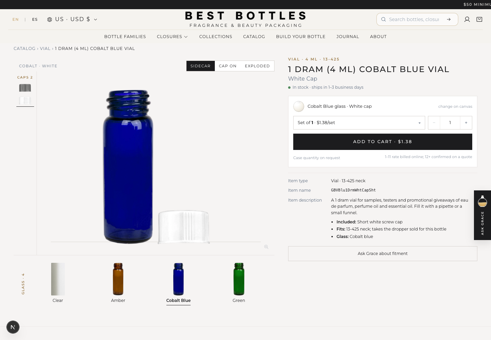
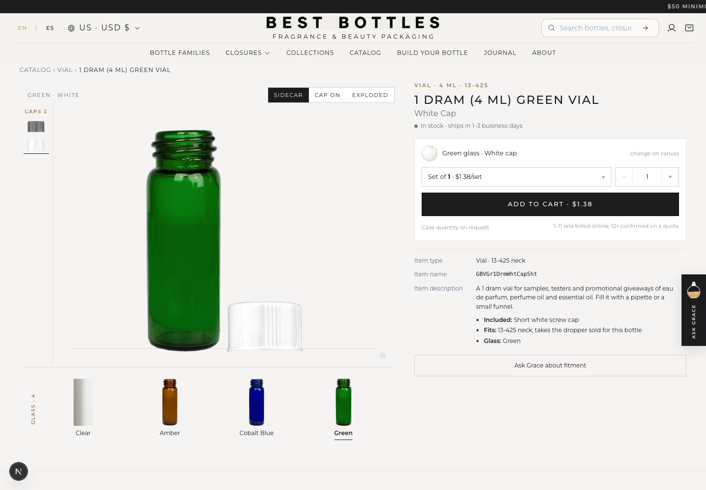

1 dram / 4 ml vial family
Clear, amber, cobalt blue and green use the same short-neck reference and fixed stage size. Each color has black and white caps. Switch the controls to compare all four together, or open a product page below.
Measured reference: 44.98 mm tall · 14.60 mm body diameter · 12.50 mm across threads · 7 mm shoulder to rim.
Fixed display scale: glass height 51.74% · baseline 91%.
All four bodies are GPT Image 2.5 Sunburst assets. The three colors were edited from the corrected clear master. Original PNG files and cap sources are preserved.Before the glass update




Image registration and verification notes
These are 2D product images. Native image width is calibrated by 2.94% to 4.33% to match the measured body ratio. Camera view, short neck, baseline and cap alignment are checked across the family. Original files are not resampled or upscaled.
64 product-page checks passed across all four colors, both cap finishes, desktop/mobile, cap on, cap off and exploded views, plus color thumbnails, component strips, old links and reload. All glass frames stayed at 51.74% height and 91% baseline.
Local review files and original assets are retained. This update covers the eight screw-cap SKUs.